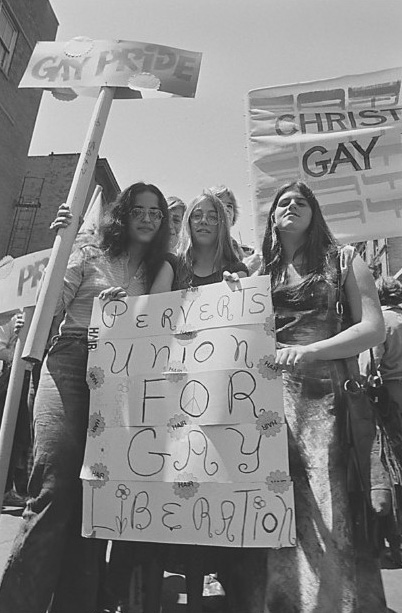
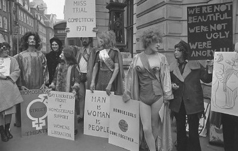
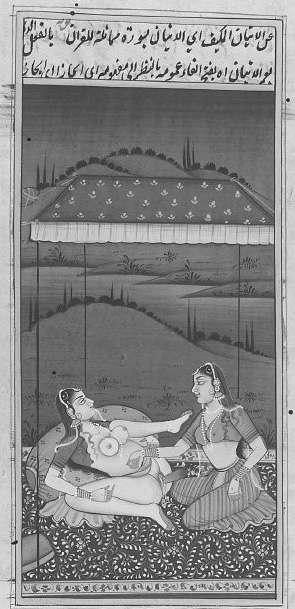
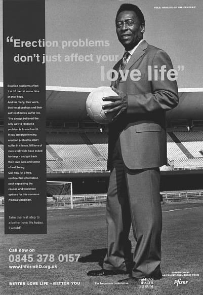

杰弗里·威克斯，1986年
联盟政治
20世纪六七十年代是一个关键的阶段，在西方，这一时期对性的公开讨论日益白热化，性的政治化程度日益加深，这最终导致人们从根本上重新审视对性行为和性身份的理解和体验方式。道德和法律对性行为管制的放松常常被视为性革命时期的最主要特征，而女权主义和同性恋对异性恋标准范式的批评，也引发了同样极端的性的含义的变革。然而，主流社会对于性问题的公开讨论，一开始却牢固地与这一观点相结合：性意味着——理所当然地并且只是意味着——异性之间的关系。比如，这一时期典型的畅销著作如《性的欢乐》，被作者称为“对于人类全部性问题的轻松描述”，但其中并未谈到同性恋或女同性恋问题。1969年出版的性手册《关于性你想知道但羞于启齿的一切》同样畅销，书中回答了“女同性恋者彼此间做些什么”这一问题，答案如下：
但是，当时社会和政治的变化还是加速了公众对于米歇尔·福柯所说的“边缘”性状态的肯定，其戏剧化的体现是女同性恋和男同性恋群体的激增。虽然小范围的、以聚会等形式出现的同性恋亚文化在近代史上，特别是在大的中心城市出现的时间要更早一些，但从20世纪60年代末开始，男女同性恋的文化空间和政治组织的发展才达到了前所未有的规模。
1969年，纽约警方对同性恋酒吧“石墙酒吧”进行了常规的突击搜查，遭到了人群自发的反抗。一般认为，这次反抗行动标志着现代同性恋解放运动的开端。当然，在此之前已有不少行动，最早的是19世纪末德国出现的保护性少数派的组织，这时“同性恋”这一近代词语刚刚诞生。“石墙行动”之后，美国又成立了“全国同性恋解放组织”，英国1970年成立了昙花一现的“同性恋解放阵线”，其他国家也出现了许多类似的团体。一些同性恋维权团体，如美国的“兰姆达法律辩护基金会”，主要致力于在现存政治框架内，以诉讼或游说的策略，改革歧视性政策。其他的组织，如反等级制度的“艾滋病释放能量联盟”，则对“生儿育女者”（指异性恋者）采取了更加非传统的、具有挑衅意味的策略。艾滋病的出现所带来的特殊问题，进一步起到了政治动员的作用，特别是在男同性恋这一问题上。艾滋病通过性交传播，并且给旧金山或纽约等大都市地区已具规模和声势的男同性恋群体造成了毁灭性的打击，这些事实让男同性恋者进一步团结起来，加强了与国内和国际性选择自由群体的联合。之后，特别是在20世纪90年代之后，许多西方国家通过了大量同性恋权益立法，主要针对关键政策领域，如军事、就业、民事伴侣关系 [20] 等。

图10纽约的同性恋解放运动，1970年。
同性恋者还将以前人们给予他们的标签加以重新利用，逐渐改变其社会含义，这也是他们的一种政治策略。比如，“柴棍” [21] 、“歹客” [22] 或“酷儿”之类的词汇，原先使用时带有贬义，但“艾滋病释放能量联盟”和位于纽约的“酷儿民族”等团体，成功地对其加以改造，他们采用反抗口号“我们是酷儿，我们在这儿”作为自己的身份标签，激起了同性恋者的自豪感，起到了组织同性恋者集体行动的作用。在这样的情形下，人们用gay [23] 这个词形容自己，始于20世纪五六十年代的美国，这标志着同性恋身份的政治化（导致了新的身份分化，比如“他可能是homosexual，但不是gay”）。在更大的范围内，很多19世纪的性科学精确划定界限的名词，包括变性者、异装癖者、施虐受虐狂、恋童癖者和恋物癖者等，为这些群体所利用，为他们公开肯定自我并要求社会承认提供了平台。

伦敦同性恋解放阵线，1971年。
政治、文化、媒体和消费工业领域对于性存在多样化的逐步承认，也导致了“变态”这一概念的淡化。19世纪的性学规定了性常态，从而有了“变态”的概念，但这一概念随着性少数派的高调而淡化了。正如性学家杰弗里·威克斯所说：
然而，性身份标签的激增也给围绕性存在的联盟政治制造了困难，成为各种不同的政治主张之间潜在冲突的源头。比如，在争取抚养权和领养权时，男女同性恋者的权益常常是一致的，但女同性恋者对为何将行动集中在反对艾滋病和鸡奸法上（在70个左右的国家里仍有这样的法律，但一般只针对男性之间的性关系）提出了质疑，因为这些问题对她们的影响微乎其微。女同性恋者在医疗卫生、生育政策、儿童保健、工作场所对妇女的性别歧视等方面，与异性恋女权主义者而不是男同性恋者拥有更多的共同利益。不仅如此，另一些问题，比如为改善乳腺癌治疗而发起的抗争，被认为是特别有关女同性恋者的利益的，因为乳腺癌在没有生育孩子的女性身上发病率畸高，很多女同性恋者（当然不是所有的女同性恋者）都没有生育。许多女同性恋激进分子对女权主义支持堕胎权利的行动表示了强烈支持，但男同性恋组织大部分表示拒绝参与，认为“这不是同性恋的问题”。
不仅如此，女权主义者、男同性恋者和女同性恋者——不管是在他们内部还是在他们之间——在一些问题上存在分歧（比如施虐受虐狂和色情出版物各自的好处），而变性者和异装癖者也遭到了女权主义者的批评，因为他们的存在强化了性别的刻板印象。在“同性婚姻”的问题上，女权主义者也与许多男同性恋激进分子有摩擦。正如社会学家史迪威·杰克逊所指出的，在很多女权主义者眼中，争取同性婚姻的斗争将父权婚姻制度中男性的特权扩展到了同性恋男女的婚姻领域，而对婚姻制度本身赖以存在的性别等级——过去，一些女权主义者曾为此提出废除婚姻制度——则不闻不问。在这样的背景下，一些女权主义者，包括女同性恋者断言，同性恋解放运动已经成为男同性恋解放运动。由此，同性恋运动中的男同性恋者和女同性恋者之间的政治分化出现了，和前一章里讨论过的、异性恋和同性恋女权主义者之间的分化如出一辙。
一些其他的性少数派成立了独立的组织。比如，20世纪70年代起包括荷兰、美国和英国在内的多个国家出现了众多的恋童癖权益群体，这可能也是最具争议的一个现象。恋童癖激进主义在荷兰尤其有影响，该国成立了声势浩大的“荷兰性改革组织”（NVSH），在该组织的支持下，1972年《与儿童的性关系》一书出版，书中概括了国际上对于“跨代际性关系”的研究，在西欧的恋童癖政治激进主义活动中被广为运用。1979年，一项针对荷兰议会发起的请愿活动，要求将儿童和成人之间双方自愿的性行为合法化，这一行动得到了“荷兰性改革组织”、女权主义团体和世界上现存的历史最悠久的同性恋权益群体“文化与休闲中心” [24] （COC）的支持。大约同一时期（1979年—1981年），新教性教育基金会（PSVG）向荷兰的小学发放了数万册名为《恋童癖》的宣传手册。
世界卫生组织将恋童癖描述为一种性和精神上的错乱，与此相反，恋童癖激进分子则要求予以恋童癖更高的合法地位，不再将其列为一种精神疾病，并主张儿童的性权利和（双方自愿的）跨代际性关系的合法化。在法国，20世纪70年代末出现了各种请愿活动，要求议会废除有关性行为最低合法年龄的法律条款。特别是在1977年，著名的公共知识分子让—保罗·萨特、西蒙娜·德·波伏娃、米歇尔·福柯、雅克·德里达、罗兰·巴特和法国最有名的儿童精神分析学家弗朗索瓦兹·多尔多共同签署了一项请愿书，要求将所有成年人和未成年人之间双方自愿的性关系合法化。由此，恋童癖支持团体的运作环境发生了改变，新背景下关于儿童性存在的文化观念在更广泛的层面上被重新定义，性成熟的年龄也大大降低，这很可能是由于营养和健康状况的改善。比如，在20世纪六七十年代，西方国家的女孩平均13岁就达到性成熟，在一些非西方国家的发达群体中也是如此。一个世纪之前，女孩性成熟的年龄为16岁到17岁，这一时期男孩在17岁时达到身体的性成熟，19世纪中期则要到23岁。这样的趋势一直延续下去。
英国的“恋童癖信息交换组织”（PIE，成立于1974年）、美国的“北美地区男人与男孩之爱联盟”（NAMBLA，成立于1978年）、“丹麦恋童癖联盟”（DPA，成立于1985年）、“国际恋童癖和儿童解放组织”（IPCE，成立于20世纪90年代初）和其他一些团体，都以弗洛伊德的理论和包括《金赛报告》在内的性学研究为依据，提出儿童是具有性欲的。这些组织还借助古希腊的性模式，提出成年人和儿童之间的性关系可以带来“教育上的好处”。
虽然恋童癖在更大范围的公众中一直是一个具有争议的问题，但从20世纪80年代起，公众对于成年人与儿童的性关系采取了更严苛的态度，当然严苛的程度因各地文化不同而各异。在西欧，由于儿童遭受性虐待的现象令公众怒不可遏，恋童癖政治游说活动渐渐销声匿迹。2006年在荷兰成立了一个“热爱邻人、热爱自由、热爱多样化”的党派，其目标就包括将任意年龄的性行为合法化，除非这一行为是危险或遭胁迫的（该组织还支持将针对动物的性虐待治罪，根据目前的荷兰法律，这样的行为不会受到惩罚），但该党派未能从荷兰公民中收集到必要数量的公众签名，因而不能参与实际的选举。在美国、加拿大和英国，警方对恋童癖团体成员日益严密的监控和定罪，使得很多——虽然并非所有的——重要团体不得不解散，或转变为更加隐蔽的网络团体。
起初，围绕性行为最低合法年龄（个体被认为有能力在明确知情的情况下同意进行性行为的最低年龄）等问题，恋童癖团体和一些同性恋权益组织形成过政治同盟。很多国家目前的性行为最低合法年龄在17岁或18岁左右，合法年龄规定较低的国家有菲律宾（12岁）、西班牙和日本（13岁）、德国和意大利（14岁）。在沙特阿拉伯、巴基斯坦、伊朗等国，任何婚外性行为都是非法的。在过去的20年里，性行为最低合法年龄的立法问题成为了同性恋权益行动的主要问题之一，因为在很多国家，男性之间的性行为最低合法年龄，要比异性之间或女性之间的同性性行为的最低合法年龄（对女性之间的同性性行为定罪的情况要更加少见）要高。当然，不少国家近年来将年龄标准调至相同。然而，目前大约有70个国家还是将所有的同性恋视为犯罪（在津巴布韦，同性之间牵手也是犯罪）。
同性恋权益团体曾因为性行为的最低合法年龄，或者更广泛意义上的性少数派的团结问题，和恋童癖激进主义者形成过同盟，但自20世纪80年代初开始，这一同盟渐趋瓦解。在很大程度上，这是基督教右派宣传的结果，如美国保守主义激进分子安妮塔·布莱恩特发起的一场抵制“将我们的孩子纳入同性恋阵营的危险”的宣传。她自称这是一场“圣战”，以“拯救我们的孩子”为旗号，将所有的同性恋者——特别是男同性恋者——描绘为潜在的猥亵儿童者。这一行动引发了美国从20世纪70年代末开始的有组织的反对同性恋权益组织的行动。在荷兰，虽然同性恋权益团体“文化与休闲中心”20世纪70年代初曾宣称，只要儿童和恋童癖者得不到性解放，同性恋解放运动就没有完成，但到了20世纪90年代中期，绝大多数同性恋权益团体都明确疏远了恋童癖支持团体。成年人和儿童之间的性行为在法律上被视为性虐待，恋童癖支持团体呼吁取消这些法律保护，对此同性恋权益团体也表示了谴责。美国最大的男女同性恋游说组织“人权运动组织”的一位代表在提到“男人与男孩之爱联盟”时就曾表示：“他们不是我们群体的一部分，他们想要暗示恋童癖是事关男女同性恋者公民权利的议题，对这一企图我们也完全表示反对。”
在恋童癖以外的其他政策领域内，战略同盟得以成功构建。LGBT（女同性恋者、男同性恋者、双性恋者和跨性别者群体）这一囊括性的标签，就标志着不同的性少数派之间采取了更积极的措施来相互包容和形成政治联盟。不过，这个本就不太稳定的大联盟，却遭到了黑人同性恋激进分子的攻击。他们提出，联盟对于仇视黑人同性恋问题过于关注，而忽略了解决同性恋权益组织内部潜在的种族歧视。虽然美国黑人民权运动对同性恋政治行动产生了影响，贝西·史密斯和奥德列·罗尔蒂充当了重要的文化符号，黑人同性恋者以及异装癖者在石墙酒吧的抗议活动和对艾滋病的政治回应中也扮演了重要角色，但黑人男女同性恋者仍然认为，他们在同性恋权益组织中的领导权没有得到充分体现，他们的特殊问题在同性恋政治议程上也没有得到充分重视。
性分离主义
到底是应当通过“单个议题”组织集中解决某个问题，还是应该追求更广泛的目标，这一点上的分歧也催生了分离主义策略。的确，这是同性恋激进主义运动早期就已经开始反复出现的问题。史上最早的性少数派权益运动出现于19世纪末20世纪初的德国。当时，围绕上述问题运动内部就出现了分歧：以性学家马格努斯·赫希菲尔德为首的“科学和人道委员会”（1897年），以“第三性别”的同性恋模型为基础，倾向于一种以男女同性恋者的联合为基础的同性恋分离主义模式。1902年由无政府主义者阿道夫·布兰德、性学家贝内迪克特·弗里德兰德和青年运动激进分子威尔海姆·詹森联合成立的“拥有自我者团体”，却主张以同性恋男性和异性恋男性之间的联盟为基础的性别分离主义模式。1955年在美国旧金山成立的“比利提斯的女儿们” [25] 被公认为世界首个女同性恋权益组织，但在20世纪70年代，对于是否应致力于广义上的妇女权益，而不仅仅是狭义上的女同性恋权益这一问题，组织内部出现了分歧，导致其最终瓦解。不仅如此，“美国全国女性组织”（NOW）也呼吁驱除内部的“同性恋威胁”，因为担心女同性恋声音的存在会招致媒体对运动的敌视。
20世纪七八十年代的一些女同性恋分离主义派别，不仅寻求组织上的独立，而且寻求地理上的独立，从而使得以上的分歧更加极端化。最著名的有吉尔·约翰逊1973年出版的图书《女同性恋部族：女权主义的解决方案》，书中提出对“流亡的女同性恋部族”进行“部落分类”，呼吁在更广大女性运动的阵营之中，建立独立的女同性恋者的社会和文化空间，作为一个权力基地。20世纪70年代初，荷兰的女同性恋极端组织曾幻想在一个“女儿岛”建立一个独立的女同性恋社区。无独有偶，澳大利亚的激进分子也有类似的乌托邦设想，他们于2004年宣布加图小岛成为新的微型国家——珊瑚海男女同性恋者王国，并在2006年发行了自己的首张邮票。美国、加拿大和澳大利亚纷纷开辟女人专属的空间或女人专有的节日，冠以“她的土地”、“女人的领土”、“女人的节日”等名称。这样的做法至少暂时建立了女同性恋者或女性专属的地理空间。阿米斯特德·毛宾在系列小说《城市传说》中就暗讽了这一现象。2000年，美国的极端女权主义者德沃金呼吁建立女性的独立家园，从此领地策略又开始复苏。威廉·S.巴罗斯等男同性恋作家也同样呼吁建立男同性恋者的国家；一些组织，如创立于2005年、总部设立于德国的“男同性恋者家园基金会”的目标就在于游说“人烟稀少的大国政府”卖出“无人居住的土地”，在那里女同性恋者、男同性恋者、双性恋者、变性者和跨性别者可以建立一个独立的国家。
围绕性和性别身份的分离主义的虚拟世界，在英国作家“马丁戴尔小姐” [26] 近期的作品中表现到了极致。她自诩为“阿里斯特莎女性帝国”的代言人，该国度没有男人，两种性别分别是“金发女人”和“褐发女人”。20世纪80年代出现了半宗教性质的分离主义，其表现形式是在全世界范围内出现的各种信仰团体，如“重组女神运动 [27] 会众国际”和“黛安娜教” [28] ，其中一些派别与女同性恋分离主义有关。“黛安娜教”是随着1975年苏萨娜·布达佩斯的“卵巢之书”《女性之谜的圣书》问世的，该书将“新异教女权主义女神信奉者”重新按“威卡教 [29] 团体”和“非威卡教团体”分类，这一分类受到女性气质的生物模型的极大影响，这样的模型注重宣扬女性的生殖能力，或者更一般意义上的女性身体、“女性主义”和“神圣的女性气质”。
在性和性别政治区域化的过程中，极端派别采取了各种激进主义策略，如1990年在纽约出现的“酷儿民族”，打出了极具争议的口号“我讨厌直人”。酷儿民族是一个缩影，体现了一种性政治的新举措：不再要求在自己家中或者在地理上孤立的“家园”中私下享受性自由，而是通过一系列的行动要求在公共领域去异性恋化，比如“女同性恋复仇者”等团体在异性恋夜总会中发起了“酷儿出没夜”活动。他们提出，作为酷儿，要求的不是隐私权，而是公开身份的自由。分离主义的政治女同性恋主义提倡“逃离”异性恋的（殖民）统治，而新的酷儿民族主义是一种文化（而非族裔）民族主义，呼吁通过根除异性恋对同性恋的仇视，实现同性恋对公共领域的重新统治。
在理论层面上，酷儿理论与朱迪斯·巴特勒、伊夫·塞奇威克、特蕾莎·德·劳瑞提斯、米歇尔·沃纳和史蒂文·塞德曼等作者相关，从20世纪90年代初开始发展，其理论基础是之前的阿德里安·里奇、莫尼克·维蒂希以及其他一些学者的激进女权主义理论与批评，这些理论与批评针对的是以异性恋为常态的观点。酷儿理论强调男同性恋和女同性恋的社会构建本质，这一理论在米歇尔·福柯的早期著作中有迹可循，与加尼翁和西蒙、肯·普卢默和杰弗里·威克斯等符号互动社会学家以及政治女同性恋主义理论家都有相关之处。虽然“酷儿”一词涵盖了多重意义，它主要还是意在表明对男性/女性、同性恋/异性恋等二元对立范畴的反对。它强调身份类别在总体上的多元性和不稳定性。正如社会学家黛安娜·理查德森所说：
在文化上，酷儿理论强调针对占主导地位的社会意义和身份的“永久的反抗”与颠覆。对于一些作家来说，这蕴含着对于20世纪80年代以来迅猛发展的同性恋消费文化的激烈反抗，这些消费文化包括同性恋旅行社、同性恋酒吧、同性恋浴室、同性恋法律服务、同性恋心理治疗、同性恋时装卖场等，正如它们的广告口号所说：“我们在这儿，我们是酷儿，我们不是来逛街的。”酷儿理论的目标不在于融入主流社会，而是在于从根本上彻底改变社会秩序，不但要动摇被认为是理所当然的常态的异性恋，还要动摇针对男女同性恋者的身份和性别业已形成的、生物性的理解。酷儿理论声称性别身份和性身份是流动的、不稳定的，酷儿理论作家凯特·伯恩斯坦 [30] 就曾以这样的语言描述自己：
美国性学家卡罗尔·奎因和小说家劳伦斯·施梅尔于1997年创造了“后现代性恋者”一词，用来形容曾对性和性别的流动本质有着生动描述的凯特·伯恩斯坦等“后现代”个体。用这两位的话来说：
自我标榜为“麻烦制造者”和“为女性撰写男同性恋文学的虐恋作家”的帕特·卡里菲亚将后现代性恋者描述为男女同性恋运动的“杂交后代”，称其打破了男同性恋者、女同性恋者、异性恋者等标签所涉及的、性别和性存在之间的微妙联系。
政治上，酷儿激进运动——虽然从参与者的数字上来说是一个很小型的运动——强调了围绕多样性的包容与团结。然而，酷儿政治也呼吁，在将“酷儿”这一共同身份置于“女性”这一身份之上的基础上，恢复女同性恋者和男同性恋者之间的联盟。一些酷儿的政治理论批评男女同性恋组织，因为其默默推定同性恋身份是一致而稳定的。同样，极端女权主义也因吸纳“女性”这一范畴（及其所代表的“说教”倾向）而受到了批评。喜欢使用LGBT&F（女同性恋者、男同性恋者、双性恋者、跨性别者和朋友）这一说法的酷儿主义理论家则主张，在酷儿主义的未来，男同性恋者、女同性恋者以及异性恋者这样的性标签，都会被归入酷儿这一包罗万象的不稳定的身份之下。但是，目前的现实却与此大相径庭，正如作家D.特拉维斯·斯科特所说：
不仅如此，还有人针对酷儿主义强调不同身份类别之间的联合提出了批评，认为这是一种“虚假的团结”，掩盖了各种具体的性别和种族歧视。被公认为最著名的酷儿主义理论家之一的朱迪斯·巴特勒在她的作品中就提出了类似的问题，同时她还警示人们，要当心女权主义和酷儿理论在某种程度上水火不容的观点。
酷儿理论与早期针对性解放的批评一脉相承。米歇尔·福柯就曾对同性恋解放和政治（或者赖希和马尔库塞倡导的性解放）提出过批评，其中著名的观点就是否认了性解放主义中默认的一个假设：世上存在着一种可以被解放的、自然的、生物性的性存在。相反，福柯和其他社会结构主义者强调，应当把性存在看作一种由社会和政治环境所塑造的社会经验。然而，虽然基于“出柜”或“揭露”（宣布公众人物为同性恋者）等策略的政治行动，从一方面强化了男同性恋者和女同性恋者这样的分类，但强调性身份是一种“选择”和政治行动（虽然不是所有同性恋激进主义者都同意这样的观点），也改变了性身份的本质。不仅如此，自福柯写作的时代开始，更广阔范畴内的男女同性恋阵营也开始了更大程度上的分裂，具体表现为商业性和激进性的同性恋亚文化，这些亚文化服务于皮衣女同性恋者、施虐受虐同性恋者、充当男性角色/女性角色的女同性恋者、女装男同性恋者、女性化的女同性恋者、双性恋者、泛性恋和全性恋者、同性恋共和党人、无政府主义——女同性恋的——女权主义者、男同性恋退伍兵、同性恋摩门教徒、英国男同性恋光头党，或者爹地一族（对年轻的成年男子有性兴趣的年长男子）。更广泛意义上的身份分类及相关的政治利益的性质改变和分裂，为性政治创造了新的机遇，也给联盟政治带来了新一轮的挑战，还带来了新的排他主义。
保守主义的性政治
由酷儿主义理论家所倡导的、由后现代性恋者践行的、激进的性的社会模型，在过去的20年中面临着性的宗教和生物模型再度盛行的挑战。比如，天主教会目前还是正式将同性恋定义为“道德恶行”。20世纪80年代起，基督教和其他宗教主义在整个西方世界的兴起，使得对于性变态的传统道德谴责再次兴起。在政界，基督教右派激进主义基本上是同性恋权益运动最激烈的反对者，这样的情形以美国尤甚。作为一项社会运动，基督教右派主要依据福音派新教团体的主张，即性放纵的上升趋势带来了“道德沦丧”的局面，而女权主义和同性恋运动又给以父权制和异性恋为基础的家庭制造了威胁，为抵抗这样的局面和威胁，就要守卫和恢复“传统价值观”。
然而，运动内部的政治策略也不尽相同。如美国基督教男性群体运动“守信者”，主要致力于“精神的、道德伦理的、性的纯洁性”（“守信者”条规第三条），以及“通过爱、保护和《圣经》的价值观，建立稳固的婚姻和家庭”（“守信者”条规第四条），但其最推崇的，则是男性气质而非性取向，该组织的根本目标——在异性恋家庭中重建传统的性别地位——也间接表明了这一点。相反，一些美国组织如“传统价值观联盟”，则倾向于不仅认为同性恋不道德，而且将其看作危害社会和“摄走”年轻人的力量，因此他们专门致力于反对同性恋权益。颇有恶名的堪萨斯州威斯特布路浸信会认为，各种降临于美国的社会灾难，包括艾滋病、“9·11”事件、美国士兵在伊拉克的死亡，都是上帝对美国纵容同性恋的惩罚，美国是罪有应得。它的网站“上帝憎恨柴棍”（大标题“欢迎，亚当堕落的子女们”）声称“上帝憎恨美国”（以及瑞士、加拿大、爱尔兰和墨西哥），因为它有着“亵渎上帝的鸡奸文化”。
许多西方国家都有针对男女同性恋者的基督教支持团体，它们将同性恋视为一种受到误导的生活方式选择，致力于“帮助”那些希望过上“体面”的异性恋生活的人。比如，其中最大的团体之一“解脱国际组织”承诺，“通过耶稣基督的力量助人从同性恋中解脱”，为“与有害的同性恋诱惑作斗争的男性和女性”和想要“变成异性恋”的人提供“修复疗法”，此外还召集一年一度的“解脱会议”（2007年的大会名为“革命”）。
虽然宗教和保守团体仍然以“家庭价值观”为旗号，反对性取向的多样化，并在很大程度上主宰了性的道德模型，但在各项争取平等权利的运动中，倡导尊重性取向多元化的其他声音也一直存在。面对反复出现的道德激进主义和性保守主义思潮，杰弗里·威克斯和许多其他各派的酷儿主义理论家试图阐释其他“改良版的”性存在价值观模型。不仅如此，不少宗教机构的自由派神学家也以不同版本的基督教伦理为依据，发声支持同性恋对权益的要求，而新保守主义则对性身份作出了重新定义，提倡从政治立场推进平等。相对于酷儿政治赖以形成的左派激进立场，新保守主义的立场在保守的同时又具有解放性。这一反酷儿同性恋政治派别的典型代表有现居美国的英国作家安德鲁·苏利文，他曾著有《保守主义的灵魂：我们曾如何失去它，又将如何将它找回》（2006年），还有小木屋共和党人（共和党的同性恋支派）。在文化领域，“熊人”运动近年来也风头正健，该运动赞扬传统的男性特征明显（拥有身体和面部多毛的特征）的男同性恋者或双性恋者，反对所谓的“阴柔”的方式和作风。
性的生物模型在近年来进化科学和基因科学迅猛发展的影响下，也重新焕发了活力。如雄心勃勃的“人类基因工程”，就致力于描绘出人类DNA的整个序列。基因研究领域的进步，使得对于性行为和性身份的生物学和遗传学解释重新盛行起来。比如，1993年的《科学》期刊上曾发表了哈默等人对果蝇进行的一项研究，由此人们认为同性恋可以用“同性恋基因”来解释。该研究宣布基因排列方式和性取向之间存在联系——这一发现一直遭到激烈质疑。20世纪90年代的诸多研究也试图找出许多生物特性背后的原因，如同性恋者中有更多人是左撇子，还有一些其他的研究继续认为同性恋是性荷尔蒙的分泌失调所致。美国国防部等机构继续从生物和医学的角度来定义同性恋，认为它是一种精神失常行为。最后，一些刺激性功能的产品如药物“万艾可”的研发也寓示着性存在这一概念的深度医学化。
性政治内部截然相反的两派立场，都以性的生物模型为依据。举例来说，一方面，所谓“同性恋基因”的发现引发了一些人呼吁对性偏常现象进行基因“修正”；但另一方面，1993年的《时代周刊》曾刊登了一篇兰姆达法律辩护基金会的一位代表对同性恋基因的“发现”表示欢迎的文章。他的观点是，该发现意味着同性恋者“不能左右自己的性取向”，因此不应当被歧视。和性的宗教模型一样，对于性的生物学理解，既将性偏常现象病理化，又成为了为其争取平等权利的依据。
基因学领域的最新进展也使一些受到集体关注的问题再次进入公众视野，如遗传、生育控制、福利制度的未来等，这些问题也被纳入政治议程。一些新的举措，如怀孕期间的基因咨询，引发了一些人的担忧，因为过去的优生措施曾带来过教训，但它们对另一些人来说，则意味着改进民族整体基因储备的希望。比如基因科学家赫尔曼·穆勒曾在美国建立了一个“精子银行”，它一直运行到1999年，打算通过提供诺贝尔奖获得者的精子以改进美国的基因“质量”。但这一计划遭遇了惨败，因为获奖者不愿意参与捐献，即使有少数（老年）科学家愿意捐献，其精子质量也很低。
在更大的范围内，政治家们公开表达了对“不受欢迎”的公民群体，如穆斯林移民的较高生育率的担心，比如20世纪90年代法国的政治家们曾对此发表过意见。在此之前，西方国家就曾对于印度、中国等非西方国家的高生育率表示过担忧。与繁衍有关的女性性存在，继续成为国家政策的特别关注点。比如，在20世纪70年代早期的美国，每年约有10万至15万低收入妇女接受了联邦政府买单的绝育手术，她们这么做的原因，常常是因为政府威胁要收回发给她们的福利补贴。美国禁止滥用绝育委员会对此进行了诉讼，联邦法官在1974年的一项裁决中宣布这类行为非法，但一般认为，这一裁决并未刹住强制绝育的势头。到20世纪80年代初，据估计约有24%的非裔美国妇女、35%的波多黎各裔妇女，以及42%的美国印第安妇女（相比之下，只有15%的白人妇女）接受了绝育术，这些手术很多都是在当事人不同意或不完全了解后果的情况下进行的。目前还有一些组织，如“阻断工程”（曾经名为“需要社区关怀的孩子”）组织，向男女吸毒者提供现金，鼓励他们接受绝育或输精管切除术。20世纪90年代开始，共和党的政客们也开始呼吁对“杂乱”的人口群体，包括吸毒母亲和其他福利救助对象施行强制绝育，此举引发了外界对于“新优生政策”的声讨。
在欧洲国家，近期关于移民的文化论战的焦点是性伦理方面的争议。穆斯林移民因为拒斥西方的性解放和妇女解放，以及对性取向的多样性缺乏宽容而备受谴责。文化上的“外来者”被认为比本土人群更具有性压抑倾向，这和早期历史对于非西方人的性存在的描绘相比，是一个有趣的反转。的确，西方人一直在“东方”文化中寻求性幻想。很多西方知识分子对“东方”的异国情调的描绘，都充满了无尽的感官刺激和毫无罪恶感的淫乱行径，如18世纪法国理论家孟德斯鸠的《波斯人信札》（1721年）、19世纪法国小说家古斯塔夫·福楼拜的作品和19世纪的探险家理查德·伯顿爵士（《天方夜谭》和《爱经》的译者）的作品。早期西方人类学家的作品也大抵如此，比如玛格丽特·米德的《萨摩亚人的成年：为西方文明而作的原始人类的青年心理》（1928年）和布罗尼斯拉夫·马林诺夫斯基的《野蛮人的性生活》（1929年）都照例将非白人的种族描绘为更贴近于自然，因而在性方面更加自由的种族。相比较而言，西方人的形象则更加文明开化，因而在性方面更加克制。黑人男性则被普遍认为拥有比白人男性更加旺盛充沛的性能力，这也反映了西方人关于性和种族的幻想与焦虑。

19世纪的印度，一位妇女用根类蔬菜作为假阳具，对另一女性进行爱抚。
性存在与权力
因此，近年来关于性存在的争议，进一步说明了性存在与权力的社会关系之间的复杂关联，权力的社会关系由历史上的性别、社会阶级和“种族”所形成。用米歇尔·福柯的话来说，性存在构成了：
和性解放范式下的观点相反，福柯认为性存在不能简单地对抗权力。我们之前曾经明确过，马尔库塞、赖希和弗洛姆等弗洛伊德派的马克思主义者曾在20世纪60年代提出，性是一种受到现代文明和资本主义压制的正面力量，性解放能够从根本上改变社会秩序。20世纪60年代之后，这种性革命会解放性存在和颠覆更大范围内压迫性的权力结构的希望已经逐渐消失。
但性存在和权力的关系却变得更重要了，因为正如福柯所强调的那样，我们和作为性生物的自己的关系，构成了现代身份的中心。英国社会学家安东尼·吉登斯也曾提出过类似的观点，他称：“某种程度上……性存在是我们自身的一个可塑的特征，是身体、自我身份和社会规范的一个联结点。”不过，对于性存在在现代人自我身份中的中心地位的政治意义，福柯和吉登斯却持不同意见。福柯认为，性存在是现代权力关系的首要目标，也是社会对于“杂乱”人口进行分类的根本准则，而吉登斯却认为过去的几十年中，“纯粹”关系的流行是一种正面的现象。他口中的“纯粹”关系，指的是这样一种关系：女性所处的社会环境使其对男性的经济依赖减少，因此一些退出性的选择开始变得可行，如要求离婚。虽然纯粹关系与传统婚姻相比更为脆弱，但传统婚姻是靠背后更广大的社会制度支撑的，相比较而言，纯粹关系蕴含着对亲密关系的改变，这种改变对私人生活和公共领域中的民主化均有裨益。吉登斯以及德国社会学家贝克和贝克—格恩施海姆认为，女性率先发起了对性存在和亲密关系的更平等的理解。在他们看来，男性性存在的根本变化，是女性试图改变生活方式的斗争所取得的结果。正如贝克和贝克—格恩施海姆所说：“男性的解放是一个被动的事件。”他们还说，男性“似乎是以旁观者的身份参与了自我解放”。
毫无疑问，男性和女性之间的关系在过去的几十年中发生了急剧的变化，男性气质和女性气质的标准范式也是如此。虽然以前的理论认为男性性存在具有内在根本的暴力性，现在却出现了不同的解释，强调了男性（在异性关系）性经验中的被动性和脆弱性。这样的解释出现的背景是更大范围内的“阳刚危机”，而“守信者”之类的组织总是用宗教激进主义的答案来解释这一现象。同样，近期关于性功能药物“万艾可”的争议也可以以不同的方式来解读：它占领市场的速度可以看作是某种男性愿望的胜利，但同样也可以看作是进一步强化了男性不存在问题的性能力（和心理压力）。围绕性别和性的交叉点，也出现了全方位的分析，从将女性性存在病态化，将男性的异性恋视作性科学和医学领域内理所当然的范式，到将男性性经验进一步问题化。这也提醒了我们，用政治理论家特雷尔·卡弗的话来说，“性别一词不仅仅意味着女人”。
从20世纪80年代末期起，性存在问题成为西方各项政治议程上的热点话题，范围覆盖了各国以及国际上的相关问题。很多引发争议的问题，如少女怀孕率上升、性传播疾病的防控、卖淫业的管理、对儿童的性剥削、互联网色情影片、军队中的男女、同性恋者、同性恋“婚姻”和子女收养、仇视性犯罪、新生育技术，以及政治家们的“私人”道德都成为公众热烈讨论的话题，一些如堕胎许可之类的旧问题如今也引起了新一轮的热议。艾滋病、性旅游业、跨境贩卖妇女和互联网恋童癖等问题，说明了性政治的国际化本质，也体现了道德纯洁性话语的再度兴起及其政治影响力。在性存在的政治背景和更大范围内的社会和技术发展的背景下，性存在的概念在过去的几十年中经历了深刻的变化。现代性科学也记录了这样的变化给个人行为带来的影响。有点讽刺的是，引发性和权力关系变化的主要因素，是那些医学和性学领域内，与处于霸权地位的、男性的、异性恋的性存在相比处于边缘地位的因素，也就是女性的、男同性恋的或女同性恋的性存在，本书中从头到尾都体现了这一点。
在这一过程中，社会对于性存在概念的理解也趋于多元化。性解放理论家认为性快感是实现人类潜能和幸福感的关键所在，但一些不同的看法却认为性存在是引发危险、死亡、道德堕落、商业剥削、男性暴力、政治上的独断专行以及身份不稳定的因素。
流动的性
原则上，现代社会的个体可以凭自己的意愿选择性身份，但他们往往并不只是凭自己的意愿选择。现代的社会和政治背景为性方面的可能性提供了舞台。比如，互联网之类的新的通讯技术为人们提供了新的性选择，包括在网络空间采取“虚拟”身份和面对更多潜在的性伴侣。正如社会学家西格芒特·鲍曼在《流动的爱》一书中所提出的，现代世界是一个以社会关系整体上的流动性为特征的世界，这一现象使人们不愿意投入长期的关系，因为“更好的产品”可能就在不远处。可供选择的性商品的专门化也体现了性的亚文化的碎片化。Gaydar等男同性恋交友网站的用户已经遍及全球，有来自阿尔及利亚、阿富汗、巴基斯坦和刚果共和国等国家的用户。还有更加专门化的交友中介机构，专门为某一类人服务，如“异性恋的、非犹太人的白人”、“同性恋黑人女性”、“被困于不愉快婚姻/恋爱中的人”。曾有特蕾莎·克伦肖等著名性学家加盟为顾问的“安全爱国际联盟”，也承诺其成员全部“无艾滋病”，该组织现已不复存在。

图13辉瑞制药/《性无能联盟》杂志广告，封面人物为传奇足球巨星佩雷，该广告出现于2002年。
现代性世界的公民们也以新的方式理解他们的个人身份和问题。由撰写《大步奔向蛾摩拉 [31] 》（2002年）一书的美国同性恋作家丹·塞威治负责的、跨国运营的热门互联网性爱顾问专栏《塞威治谈爱》中，就曾有读者来信提到自己的困境，反映了上述问题：
在现代性行为的流动世界中，人们可以通过性顾问专栏、知心大姐节目、心理治疗师、类似“匿名性成瘾者”的支持团队、自助类的书籍和性手册等手段，来获取恋爱法则、性礼仪、性技巧等方面的建议。《爱欲泛滥的女人》、《拯救恋爱》、《如何放弃爱情》或《如果很受伤，那就不是爱》等图书，引导读者处理亲密关系和感情世界中的复杂问题。另外一些作品则采取了更加实际的视角，如《性练习》（“会帮助你在享受时更加自如！”）、《让你享受性福的书》（“人人不可缺少的性爱宝典”）和美国性学家鲁斯医生的《笨人性爱》。还有一些书籍旨在满足各类人群更细化的需求，如《热爱刺激的性伴侣如何使用捆绑式阴茎》、《同性恋的性快感：男人的宝典》、《60岁后崭新的爱与性》、《女同性恋手册》和《让浪漫变成可能：残疾人性爱与约会宝典（同样适用于那些爱他们的人）》。
《黄金法则：俘获那个他的屡试不爽的秘诀》（1995年）等畅销的自助类书籍，重现了男性和女性性行为和性需求的传统标准范式，其依据是男人和女人是生物特性上迥异的动物。“在一段关系中，男人必须负起责任。他必须采取主动。这不是我们凭空捏造的——生物学上，男人是进攻者”；书中的“不要主动和男人说话（也不要邀请他跳舞）”等原则，表达的就是这样的观点。
然而，也有人尝试脱离主流的范式，往往是通过建立新的标准范式。雪儿·海蒂就曾强调，女性经历性快感很有必要：
目前性存在的变化和政治，开始将性霸权和“正常”的性形式问题化。女权主义对于性存在的批评，促使人们对性存在有了更广义的理解，不再仅仅局限于阴茎侵入式的性交。主张自由选择的男女同性恋社团以及伴随而来的政治激进主义，也公开宣示了西方社会近几十年来性秩序和性别秩序的深刻变化。
通过在性和性别的交叉领域内所做的激进实验，“酷儿中的酷儿”也许成为了我们时代的性革命者。早期自我阉割的基督教徒、无政府主义的自由恋爱者、20世纪60年代的摇摆者、赖希派的性解放主义者和政治女同性恋者都来自性这一概念的外围，却为性这一概念创造了新的意义和行为方式。同样，后现代性恋者中的“女同性恋分离主义者先成为专业的女性施虐狂，然后又爱上了一个从男性变成女性的变性者，决定自己也要变性，再然后变成了男人，认识到自己如今是一个‘男同性恋者’”这样的问题，也对被我们自己视为理所当然的、最基本的性别和性身份提出了疑问，生动说明了（后）现代社会提供的更多的流动性所带来的可能性。
这是不是意味着，未来我们都会将自己视作后现代性恋者呢？我们是不是正见证着异性恋和同性恋概念消亡之前的剧痛？正如我们已经知道的，目前的性“真理”和性身份，都是相对较近的历史背景下的产物，由性科学和医学所催生。性在未来也很可能会彻底挣脱19世纪“性存在”概念的束缚，因此性理论家呼吁一种集体的“无性化”。同时，当下性存在政治的现状，让我们没有理由认为一个“无性”的未来世界会很快到来，毕竟宗教激进主义的强烈冲击和科学语境，为对于性的传统理解提供了支持，使其卷土重来。然而，可以肯定的是，基于道德多元主义的、性的其他可能的未来方向，无法脱离新的性标准范式、新的权力关系和新的国家政策。没有一种文化能够拥有“完全”的性自由，用社会学家肯·普卢默的话说：
正如这本书所要证明的，性需求、性价值观，以及与性有关的情感，都是特定历史背景下的产物。如今我们的一些行为，可能会导致“性存在”的概念弱化。但是，无论科学和技术的进步会给人类的身体和彼此间的关系带来怎样的变化，未来性这一概念的意义，仍然会由社会和政治来塑造。